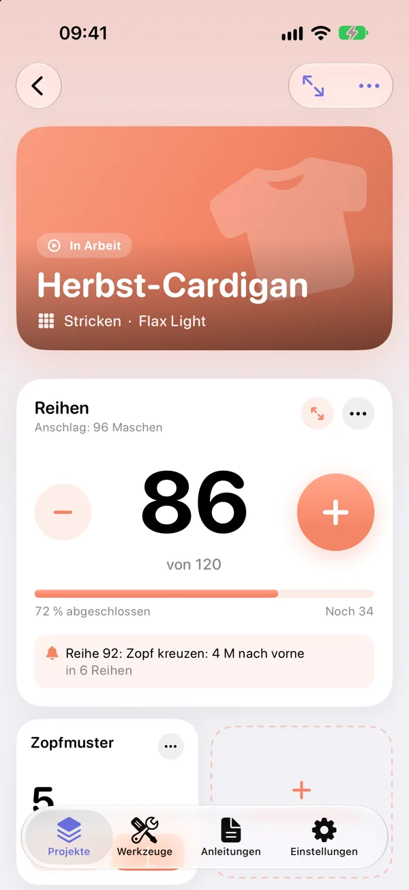
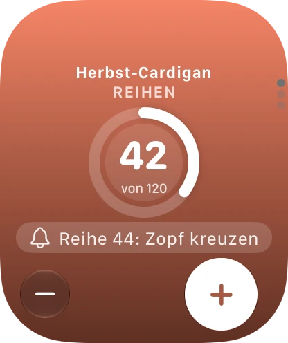

Die Reihenzähler-App zum Stricken und Häkeln
Kurz die Nadeln weggelegt, Tee geholt, weitergestrickt – und plötzlich weißt du nicht mehr, ob das gerade Reihe 37 oder 38 war. YarnSpace ist ein Reihenzähler für iPhone, iPad, Mac und Apple Watch, der direkt beim Projekt mitzählt, zusammen mit Anleitung, Garn und Notizen. So weißt du immer, wo du stehst.
Kostenlos laden · iPhone, iPad, Mac & Apple Watch · Ohne Konto
Warum eine Reihenzähler-App statt Strichliste?
Striche am Rand der Anleitung funktionieren, bis du sie nicht mehr lesen kannst, und der Klick-Zähler an der Nadel, bis du ihn aus Versehen weiterdrehst oder vergisst. Ein Zähler in der App hat ein paar Vorteile, die bei größeren Projekten schnell wichtig werden:
- Jedes Projekt zählt für sich. Pullover, Socken und Decke gleichzeitig auf den Nadeln? Jedes Projekt behält seinen eigenen Stand, und du setzt nie aus Versehen den falschen Zähler zurück.
- Mehrere Zählungen gleichzeitig. Viele Anleitungen verlangen, dass du Reihen und Rapporte parallel im Blick behältst, etwa „den Zopfrapport 6-mal arbeiten, dabei jede 8. Reihe verkreuzen“.
- Er sagt dir, was als Nächstes kommt. Ein Zähler, der weiß, dass du in Reihe 86 bist, kann dich auch daran erinnern, dass in Reihe 92 der Zopf gekreuzt wird.
- Er ist immer dabei. Dein iPhone liegt sowieso neben dir, und über iCloud hast du deine Projekte auch auf iPad und Mac.
Das kann der Reihenzähler in YarnSpace
- Zähler für Reihen, Maschen und Wiederholungen in jedem Projekt, damit Reihen und Rapporte jeweils ihren eigenen Zähler haben.
- Erinnerungen für die wichtigen Reihen, zum Beispiel „in Reihe 24 abnehmen“ oder „Zopf in Reihe 92“. Die Anleitung muss nicht die ganze Zeit offen sein.
- Ein großer Fokus-Zähler, den du ohne Hinsehen antippst. Deine Augen bleiben bei den Maschen.
- Fortschritt auf einen Blick, etwa Reihe 86 von 120.
- Timer, Fotos und Notizen zu jedem Projekt, damit du später noch weißt, wie lange es gedauert hat und was du geändert hast.
- Anleitung und Garn am selben Ort. Ein Projekt hat seine Zähler direkt neben der Anleitung und dem Garn, das du verwendest.


Reihen zählen auf der Apple Watch
Am bequemsten zählst du am Handgelenk. Mit der Apple-Watch-App von YarnSpace tippst du nach jeder Reihe aufs Plus, während deine Hände an den Nadeln oder an der Häkelnadel bleiben. Für jede Reihe spürst du ein kurzes Antippen am Handgelenk, bei einer fälligen Erinnerung ein kräftigeres. Per Widget steht deine aktuelle Reihe direkt auf dem Zifferblatt, und alles bleibt synchron mit deinem iPhone.
Die Apple-Watch-App gehört zu YarnSpace Pro. Die Zähler auf iPhone, iPad und Mac sind kostenlos.
Tipps, damit du dich nie wieder verzählst
- Zähl am Ende der Reihe, nicht am Anfang. Wenn das Tippen auf den Zähler zum Wenden der Arbeit dazugehört, zeigt die Zahl immer die fertigen Reihen.
- Lerne, dein Gestrick zu lesen. Bei glatt rechts ist jedes „V“ in einer Maschensäule eine Reihe, bei kraus rechts ist jede Rippe zwei Reihen. So kannst du den Zähler jederzeit am Strickstück überprüfen.
- Rapporte separat zählen. „Reihe 5 vom 8-reihigen Rapport“ und „Rapport 3 von 6“ getrennt zu zählen ist viel einfacher, als Reihe 21 von 48 im Kopf auszurechnen.
- Abnahmen als Erinnerung eintragen. Heißt es „in jeder 6. Reihe 8-mal abnehmen“, trägst du die Erinnerungen einmal ein und musst nicht mehr daran denken. Wo genau die Abnahmen hingehören, zeigt dir unser Ratgeber zum gleichmäßigen Zu- und Abnehmen.
- Vor schwierigen Stellen einen Rettungsfaden einziehen. Ein Faden durch eine Reihe vor dem Lochmuster oder Zopfdiagramm ist dein sicherer Punkt zum Aufribbeln. Eine Notiz im Projekt hält fest, in welcher Reihe er liegt.
Kostenlos, mit optionalem Pro-Abo
YarnSpace kannst du kostenlos laden und für bis zu drei Projekte gleichzeitig nutzen, mit allen Zählern, Erinnerungen und Notizen, deinem Garnvorrat, deinen Anleitungen und den meisten Rechnern. Ohne Zeitlimit und ohne Konto.
YarnSpace Pro gibt es im Monats- oder Jahresabo mit einer Woche gratis. Es schaltet unbegrenzt viele Projekte, die Apple-Watch-App, alle Garnalternativen, den Banderolen-Scan, Projektideen und Statistik und mehr frei. Kündigen kannst du jederzeit in den Einstellungen deines Apple Accounts.
Deine Projekte gehören dir
YarnSpace braucht kein Konto und verfolgt dich nicht; es gibt nur eine anonyme Nutzungsstatistik, die du ausschalten kannst. Deine Projekte, Zähler und Fotos liegen auf deinem Gerät und, wenn du es einschaltest, in deiner eigenen iCloud. Mehr dazu steht in der Datenschutzerklärung.
Häufige Fragen
Ist der Reihenzähler in YarnSpace kostenlos?
Ja. Alle Zähler, Erinnerungen und Notizen sind kostenlos, für bis zu drei Projekte gleichzeitig. YarnSpace Pro gibt es im Monats- oder Jahresabo mit einer Woche gratis; es bringt unbegrenzt viele Projekte und die Apple-Watch-App dazu.
Kann ich Reihen auf der Apple Watch zählen?
Ja, mit YarnSpace Pro. Die Watch-App gibt dir für jede Reihe ein kurzes Antippen am Handgelenk, bei einer fälligen Erinnerung ein kräftigeres, und ein Widget zeigt deine Reihe auf dem Zifferblatt. Alles bleibt synchron mit deinem iPhone.
Funktioniert der Reihenzähler auch beim Häkeln?
Ja. Die Zähler funktionieren fürs Stricken und Häkeln gleichermaßen, du zählst also Reihen, Maschen und Wiederholungen in jedem Projekt.
Brauche ich ein Konto?
Nein. YarnSpace braucht kein Konto und verfolgt dich nicht. Deine Projekte liegen auf deinem Gerät und gleichen sich, wenn du es einschaltest, über deine eigene iCloud ab.
Nie wieder die Reihe verlieren
YarnSpace ist die Strick- und Häkel-App für iPhone, iPad, Mac und Apple Watch. Kostenlos laden.